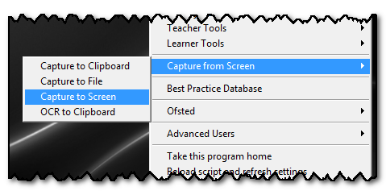
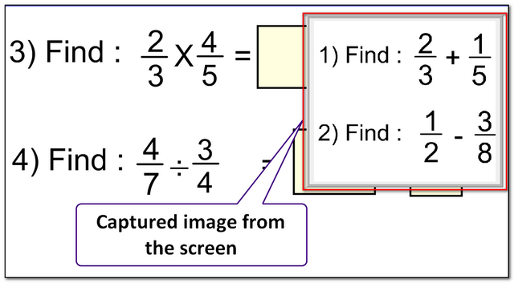
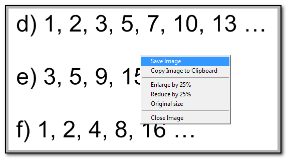

Capture to Screen
(Shortcut WindowsKey and SHIFT and Left Drag)

You can take a screen-shot and hold it on the screen by using the menu item or shortcut keys:
Hold down the WindowsKey and SHIFT key:
While holding these, CLICK your mouse and DRAG a rectangle over the image you would like to capture.
The image will then remain on the screen - here is an example of Questions 1 and 2 held so others in the class can move on to Questions 3 and 4:

You can move or re-size it by dragging, and close it by double-clicking or right-clicking and using the menu:
